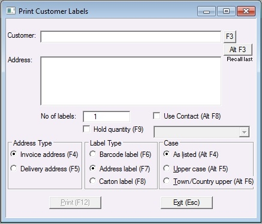

Through this section you can print a customer barcode, for such uses as customer member card purposes and also for carton labels for mailing.

Step 1
Open print customer labels by on the main menu click Reports, then click Print Customer Labels.
Select the customer
Step 2
Select label type:
Barcode - Customer barcode for membership cards etc
Address - Carton label for mailing
Step 3
Enter in how many to print.
Step 4
Click Print button.